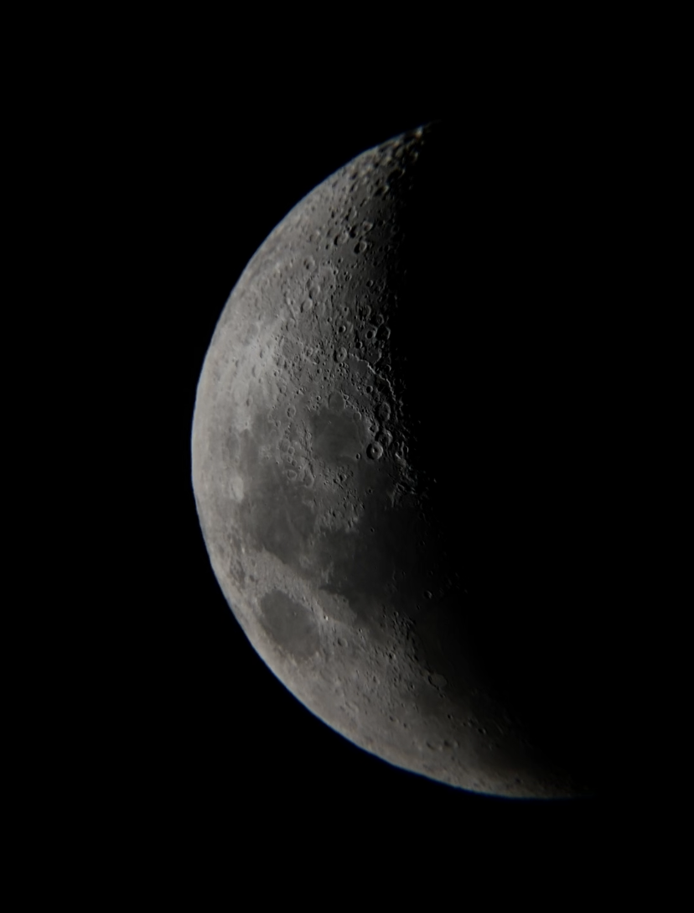
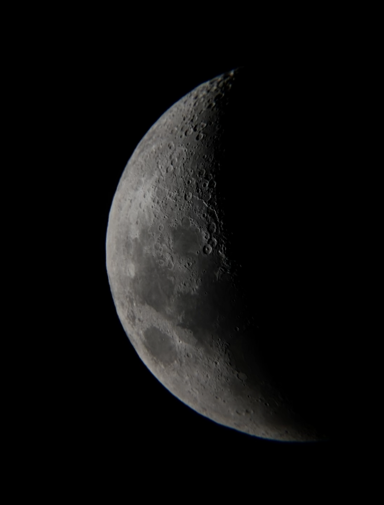

Hobbies

During the winter season, I enjoy playing in the snow, especially snow sports - e.g. skiing and snowboarding.
I recently found a new hobby in astrophotography. This was my first experience.
During the winter season, I enjoy playing in the snow, especially snow sports - e.g. skiing and snowboarding.
I recently found a new hobby in astrophotography. This was my first experience.
Favorite Music Genres:
Favorite Video Games: